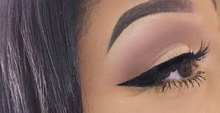
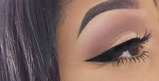

1. stamp- by using a eye-liner stamp, STAMP out your desired wing .Once stamp outline is on your eyelid, draw a line to CONNECT the stamp and eye bed. FILL in the space between your eye bed and liner as desired
2. Bobby pin – DRAW two lines on the ends of the pin. PLACE pin with the ends containing liner as you desire. PRESS down. FILL.
3. STENCIL- PLACE stencil as you desire. FILL inside the borders of the stencil
 
